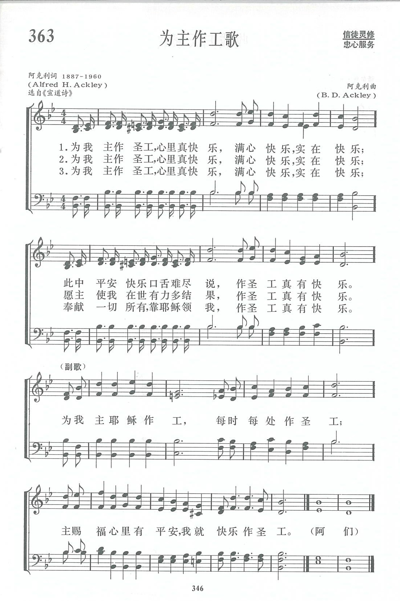

|
|
讚美詩(新編) |
|
1 I am happy in the service of the King, Refrain: 2 I am happy in the service of the King, 3 I am happy in the service of the King, 4 I am happy in the service of the King, |
|
|
https://www.zanmeishige.com/tab/14036.html?songbook=1&index=363

|
|
|
|
|


https://youtu.be/4hvYXDrUHO0 - I am Happy in the Service of the King (In the Service of the
King)
https://youtu.be/uc3NgXCBErU https://youtu.be/jblnYMTeaso
| Text: | In the Service of the King |
| Author: | A. H. Ackley |
| Tune: | [I am happy in the service of the King] |
| Composer: | B. D. Ackley |
| Short Name: | A. H. Ackley |
| Full Name: | Ackley, A. H. (Alfred Henry), 1887-1960 |
| Birth Year: | 1887 |
| Death Year: | 1960 |
Alfred Henry Ackley

was born 21 January 1887 in Spring Hill, Pennsylvania. He was the youngest son of Stanley Frank Ackley and the younger brother of B. D. Ackley. His father taught him music and he also studied at the Royal Academy of Music in London. He graduated from Westminster Theological Seminary in Maryland and was ordained as a Presbyterian minister in 1914. He served churches in Pennsylvania and California. He also worked with the Billy Sunday and Homer Rodeheaver evangelist team and for Homer Rodeheaver's publishing company. He wrote around 1500 hymns. He died 3 July 1960 in Los Angeles.
Dianne Shapiro (from ackleygenealogy.com by Ed Ackley and Allen C. Ackley)
Tune Information
| Title: | [I am happy in the service of the King] |
| Composer: | B. D. Ackley |
| Incipit: | 34554 56545 33432 |
| Key: | A♭ Major |
| Copyright: | Public Domain |
| Short Name: | B. D. Ackley |
| Full Name: | Ackley, B. D. (Bentley DeForrest), 1872-1958 |
| Birth Year: | 1872 |
| Death Year: | 1958 |
Bentley DeForrest Ackley

was born 27 September 1872 in Spring Hill, Pennsylvania. He was the oldest son of Stanley Frank Ackley and the brother of A. H. Ackley. In his early years, he traveled with his father and his father's band. He learned to play several musical instruments. By the age of 16, after the family had moved to New York, he began to play the organ for churches. He married Bessie Hill Morley on 20 December 1893. In 1907 he joined the Billy Sunday and Homer Rodeheaver evangelist team as secretary/pianist. He worked for and traveled with the Billy Sunday organization for 8 years. He also worked as an editor for the Homer Rodeheaver publishing company. He composed more than 3000 tunes. He died 3 September 1958 in Winona Hills, Indiana at the age of 85 and is buried in Oakwood Cemetery, Warsaw, Indiana, near his friend Homer Rodeheaver.
Dianne Shapiro (from ackleyfamilygenealogy.com by Ed Ackley and Allen C. Ackley)
第363首 为主作工歌 IN THE SERVICE OF THE KING _阿尔弗雷德.亨利
经文：“亲爱的弟兄们，你们务要坚固，不可摇动，常常竭力多作主工”(林前15：58)。
《新编》五线谱注明这首诗的词作者和曲作者都是阿克利(Ackley)，但细看英文全名，才知道是不同的两个人，一位名叫阿尔弗雷德.亨利(事略参阅第281首)，一位是本顿.D，(1872一1958)是兄弟两人。弟弟写的词，哥哥谱的曲。他们学有家传，从幼跟他们的父亲学音乐、弹琴，以后又留学英伦。
属主的人，都欢喜在主的圣工上有份。他们在做各项圣工时，內心深处都觉得非常甜蜜，即使工作非常艰辛，也毫无怨言，快乐勤恳地去作，因为他们明白作圣工乃是主所赐的莫大恩典，正如圣经所说“施比受更为有福”—工作本身就是福气。
从这首《为主作工歌》中显示出这个道理。
https://www.xueshengshi.com/?p=10034
Words: Alfred Henry Ackley (b. Jan. 21, 1887; d. July 3,
1960)
Music: Bentley DeForest Ackley (b. Sept. 27, 1872; d. Sept.
3, 1958)
Links:
Wordwise Hymns (Alfred
Ackley)
The Cyber
Hymnal
Hymnary.org
Note: In 1912 two brothers created a simple gospel song about the joy of serving God. Alfred Ackley wrote hundreds of song lyrics, but only a few tunes. (Over 300 of his lyrics are listed in the Cyber Hymnal, including the popular He Lives.) Bentley Ackley focused on writing melodies. He also served as pianist in the meetings of evangelist Billy Sunday.
Words such as serve, serving and service have a surprising variety of uses. It could be said the words serve us in many ways. The word in its various forms has been a part of the English language for centuries. To serve another person could mean rendering obedience, or seeking, by your own choice, to be useful and be a benefit to another. It could involve doing one’s duty, or perhaps involve showing willing devotion.
To be “in service” is what might be said when a computer system or a telephone is programed or hooked up, ready to use. But being in service also refers to anyone who is employed as a servant. On the other hand, if someone says he is “in the service,” he could mean he’s a member of the armed forces. For a store clerk to say he or she is “at your service” means they’re ready to serve you. But if an individual is “serving time,” he’s in prison.
A service is work someone does for you. Or, it could be a church service. Or the act of putting the ball in play in a game of tennis. If the garage down the street services your car, it likely means a tune-up, and making necessary repairs. On the other hand, a table service is cups and plates and utensils set up for a meal.
In the Bible, words such as “serve” and “service” are used over four hundred times. And if we include the word servant, it mounts to some twelve hundred times. Averaged out, that means the concept of serving could be found in every chapter of the Bible. It is, in truth a book about serving. The question is, whom do we serve?
There are different chains of command on the human level. A person is called to serve the one ranked above him, whether its an army general or a boss in a factory. But in the ultimate and spiritual sense the choices are limited. We are either a part of Satan’s kingdom or of God’s kingdom. We’re either a slave to the devil (perhaps unknowingly) or we choose to be a servant of God.
As for Satan, for the present time he’s the master of the unbelieving world. Jesus calls him, “the ruler of this world” (Jn. 12:31). The Bible says, “The whole world lies under the sway of the wicked one” (I Jn. 5:19). Whether people realize it or not, he is “the god of this age” (II Cor. 4:4) who “deceives the whole world” (Rev. 12:9).
But when an individual trusts Christ as Saviour, he or she is delivered from the devil’s hateful bondage into the glorious liberty of the kingdom of God. As the Lord said to Paul:
“I now send you to open their eyes, in order to turn them from darkness to light, and from the power of Satan to God, that they may receive forgiveness of sins and an inheritance among those who are sanctified by faith in Me” (Acts 26:17-18).
Christians can say:
“He has delivered us from the power of darkness and conveyed [transferred] us into the kingdom of the Son of His love” (Col. 1:13).
As believers, we’re called to “serve the Lord Christ” (Col. 3:24), “ourselves your bondservants for Jesus’ sake” (II Cor. 4:5). Our calling is “through love [to] serve one another” (Gal. 5:13). And what a joy it is to serve the Lord! (cf. Ps. 100:2), using the gifts and opportunities He gives us.
“If anyone ministers [serves], let him do it as with the ability which God supplies, that in all things God may be glorified through Jesus Christ, to whom belong the glory and the dominion forever and ever. Amen” (I Pet. 4:10).
The Ackleys’ song doesn’t say a lot. No deep biblical theology here. But it’s joyful melody is certainly expressive of the happy duty that is ours of serving God.
CH-1) I am happy in the service of the King.
I am happy, O so happy!
I have peace and joy that nothing else can bring,
In the service of the King.
In the service of the King
Every talent I will bring.
I have peace and joy and blessing
In the service of the King.
CH-3) I am happy in the service of the King.
I am happy, O so happy!
To His guiding hand forever I will cling,
In the service of the King.
CH-4) I am happy in the service of the King.
I am happy, O so happy!
All that I possess to Him I gladly bring,
In the service of the King.
Questions:
1) What is it about serving the Lord that brings us joy?
2) How will our service bring glory and honour to God?
Links:
Wordwise Hymns (Alfred
Ackley)
The Cyber
Hymnal
Hymnary.org
https://wordwisehymns.com/2018/04/23/in-the-service-of-the-king/